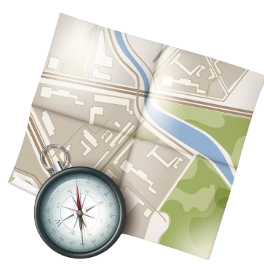

Plan trips around the map
Build personalised routes from your destination, time and travel style. Review the map, save the itinerary and continue later.

Map-first planningGenerate stops, review the route and save the itinerary.
Choose, generate, review and save
A simple flow for creating practical city routes around an interactive map.
Choose destination
Select country, city and duration
Choose interests
Pick the places and travel style you want
Review map
Review stops and route flow visually
Save route
Keep the itinerary for later